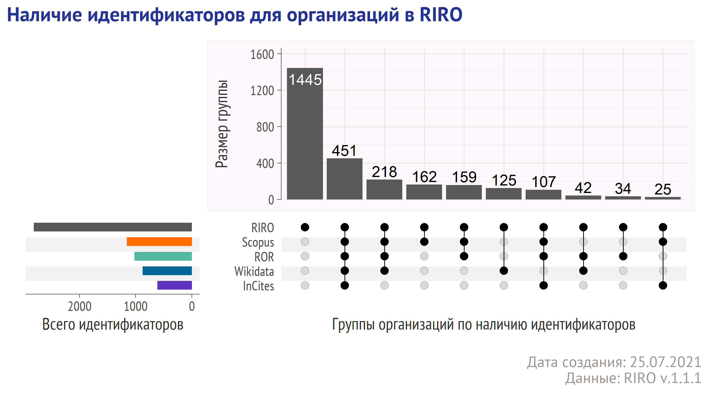
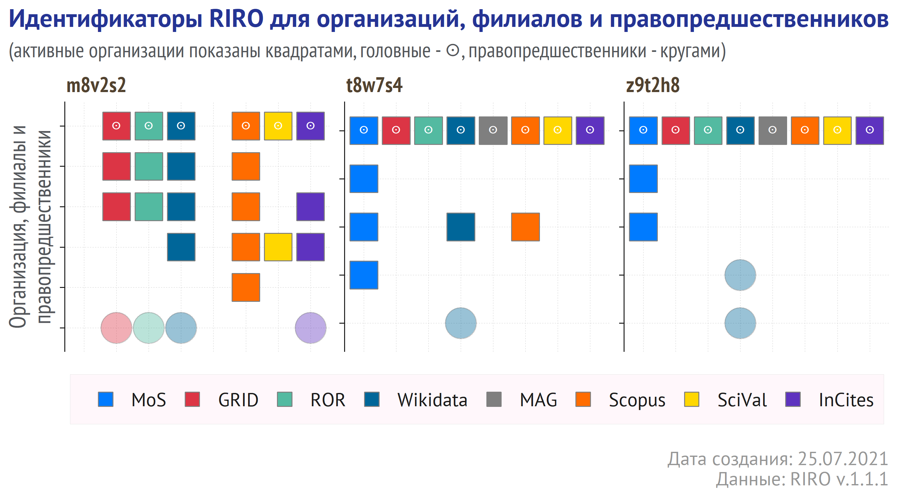

Версия 1.1 открытого индекса российских научных организаций - идентификаторы РИНЦ/eLIBRARY, указатели ведомственной принадлежности и ещё больше организаций.
С момента выхода первой версии открытого российского индекса научных организаций (что такое RIRO?) прошло 2 месяца, в течение которых авторы проекта с большим удовлетворением принимали положительные отзывы и комментарии, подтверждающие востребованность RIRO.
Новая версия RIRO включает следующие обновления:
добавлены идентификаторы организаций, используемые в eLIBRARY.ru и РИНЦ API.
для действующих головных (!) организаций добавлены коды и значения Общероссийского классификатора органов государственного управления (ОКОГУ)
расширен список организаций (всего сейчас 2818 действующих головных организаций)
для всех организаций обновлены регистрационные данные ЕГРЮЛ (июль)
обновлены идентификаторы Wikidata (удалены ошибки, внесены новые поля).
На иллюстрации ниже показано наличие идентификаторов Scopus, ROR, Wikidata, InCites для организаций, включенных в RIRO (v.1.1.2). Приведенные на иллюстрации значения основаны на подсчете идентификаторов для головных и действующих организаций и не учитывают идентификаторы, соответствующие структурным подразделениям или ликвидированным правопредшественникам.

Как Вы уже могли заметить, вместе с релизом версии 1.1 проект перешел на веб-сайт, на котором, мы надеемся, будут появляться не только релизы, но и материалы, связанные с использованием RIRO. Присылайте нам ссылки на Ваши исследования или фрагменты кода - мы будем рады их разместить в разделе “Примеры использования” (Examples).
Датасет состоит из отдельных таблиц в формате CSV (может быть открыт в Excel или в любых программах по работе с данными), связанных через идентификатор code, который выступает в роли первичного ключа.
Набор таблиц можно скачать с Zenodo вручную или программными средствами, используя OAI-PMH Harvesting API или REST API. Zenodo – один из ведущих репозиториев данных открытой науки, развиваемый на базе ЦЕРН (подробнее).
Процитировать датасет (без указания версии):
Процитировать датасет RIRO v.1.1.2 (последняя версия):
Sterligov, Ivan, & Lutay, Aleksei. (2021). Russian Index of the Research Organizations (RIRO) (Version 1.1.2) [Data set]. Zenodo. http://doi.org/10.5281/zenodo.5136473
Ниже будут показаны фрагменты каждой таблицы с информацией о 3 учреждениях, выбранных в качестве примера:
СИБИРСКИЙ ФЕДЕРАЛЬНЫЙ УНИВЕРСИТЕТ
ПЕРМСКИЙ ФЕДЕРАЛЬНЫЙ ИССЛЕДОВАТЕЛЬСКИЙ ЦЕНТР УРО РАН
ЮЖНЫЙ ФЕДЕРАЛЬНЫЙ УНИВЕРСИТЕТ
Содержит официальные сведения об организации - ОГРН, ИНН/КПП, полное и краткое названия, тип (головное, филиал или представительство) и статус (активное, ликвидировано или в стадии реорганизации). В версии 1.1. в таблицу также добавлены коды и значения Общероссийского классификатора органов государственного управления (ОКОГУ) - только для действующих и головных организаций.
В таблице ниже для экономии места краткие названия и коды ОКОГУ не приведены.
Поиск по таблице выполнялся по значениям ОГРН, поэтому в таблице появились также действующие филиалы, но каждая строка (запись) имеет свой собственный уникальный код (поле code), который и выступает связующим звеном (ключом) между таблицами.
В этой таблице по значениям code можно найти полный адрес организации (или филиала), отдельные фрагменты адреса, а также код geocode, временной пояс и географические координаты.
Таблица 2 - единственная(!) таблица, поля которой имеют однозначное соответствие с полями таблицы 1 (по значению поля code). Во всех остальных таблицах одному коду (code) могут соответствовать несколько строк.
Данная таблица связывает существующие головные организации с филиалами и правопредшественниками (для удобства в этом документе они обозначены как “дочерние организации”).
Таблица не является абсолютно полной, но для большинства научных организаций включает в себя включает все официальные филиалы (в некоторых случаях и представительства), а также правопредшественников последней реорганизации. Для некоторых организаций часть филиалов не была включена в RIRO из-за отсутствия их связи с научными исследованиями (представительства, базы отдыха, службы охраны и т.п.).
Повторим ещё раз:
для некоторых организаций таблицы 1 и 3 RIRO содержат неполный (!) список филиалов
таблица 1 и 3 не включает всех (!) правопредшественников (только последних и не для всех организаций). При необходимости сбора полных данных мы рекомендуем обратиться к соответствующим официальным источникам информации.
Столбцы code относятся к головной организации, child_code - это code для дочерних организаций, relation - тип отношения (2 значения - “Филиал” или “Правопредшественники”).
Итак, используя список из 3 ОГРН, мы из таблицы 1 извлекли 18 строк с различными значениями code, по которым в таблице 3 нашли code правопредшественников, получив в итоге 54 “объектов” с уникальными значениями code.
Соберем теперь группы вида: {code головной организации} - {все родственные коды} - {отношение}.
Все найденные в таблице 3 дочерние организации содержатся в таблице 1. Филиалы можно было найти в таблице 1 и без обращения к таблице 3 - они имеют те же значения ОГРН и ИНН, что и головные учреждения.
Ниже мы покажем, какую роль в RIRO играют правопредшественники и почему не стоит игнорировать таблицу 3.
Research Organizations Registry – стартовавший в 2019 г. международный общественный проект по созданию открытой базы уникальных идентификаторов научных организаций, по смыслу близкий проекту ORCID для отдельных ученых, построенный с использованием наработок аналогичного проекта GRID (Global Research Identifier Database). Идентификаторы ROR открыто доступны для скачивания как в виде датасета, так и через API. Любой может предложить дополнение или исправление в ROR.
Таблица содержит записи из БД ROR версия 9, которым найдено соответствие в RIRO (ключ code).
Некоторые записи в поле Relationships содержат композитную строку следующего вида:
label:xxxx|type:yyyyyy|id:https://ror.org/zzzzz
которая содержит 3 компонента label (название), type (тип отношений) и id (ROR идентификатор) для организации, которая, по мнению создателей ROR, имеет отношение искомой.
WikiData – общественный репозиторий всевозможных структурированных характеристик разнообразных объектов (в нашем случае – научных организаций), дополнять и редактировать которые может любой. Данные из WikiData доступны открыто через разнообразные интерфейсы.
Важно понимать, что обилие информации в WikiData (от профилей в twitter до списка ректоров) внесено разнообразными людьми без системной верификации и нередко содержит неточности.
В версии 1.1 исчезло поле ItemLabel, которое дублировало Org поле domain с
Таблица содержит идентификаторы БД Wikidata, которым было найдено соответствие в реестре RIRO.
Scopus – одна из ведущих мировых баз научного цитирования, аккумулирующая метаданные научных публикаций из десятков тысяч журналов и конференций, а также части книг. Большинство государственных научно-образовательных организаций России имеет к ней доступ в рамках национальной подписки. В рамках этого стандартного доступа всем желающим без дополнительной платы доступен и полноценный API-интерфейс, к которому доступны дружелюбные для неискушенных пользователей API-обертки (wrapper) на python и R, в которых есть функции для сбора информации по идентификаторам организаций.
Таблица содержит идентфикаторы Scopus, которым было найдено соответствие в БД RIRO.
Обращаем внимание, что соответствие профилей организациям определялось по названиям первых и данная таблица не гарантирует полноту или безошибочность их наполнения в Scopus. Приведенное в таблице количество публикаций соответствовало действительности на момент сбора данных (апрель-май 2021).
О том, как корректировать профиль организации в Scopus можно прочесть на русскоязычном сайте Elsevier.
Microsoft Academic Graph (MAG) – проект исследовательского подразделения Microsoft по созданию базы научного цитирования и метаданных на основе информации, собираемой парсерами Bing с сайтов журналов и PDF-файлов (подробнее). В этом заключается главное отличие MAG от Web of Science и Scopus, которые получают информацию от издателей.
За счет сочетания открытости и сбора роботом MAG является уникальным источником, особенно в «горячей» и приоритетной области Computer Science, и основой для ряда инструментов нового поколения (Lens, Semantic Scholar, Open Academic Graph).
Несмотря на последние новости о прекращении работы Microsoft Academic, мы решили включить идентификаторы MAG в RIRO. Есть вероятность, что проект MAG в силу своей большой значимости для инфраструктуры открытой науки будет перезапущен сообществом и идентификаторы какое-то время будут в обращении.
InCites – аналитическая надстройка над базой Web of Science Core Collection, доступная части российских вузов. К сожалению, в системе нет API-интерфейса для сбора показателей по организациям, но они доступны для ручного скачивания и связывания с другими данными через название, которое и служит «идентификатором».
В таблице приведены официальные названия организации в БД Web of Science и InCites.
SciVal – аналитическая надстройка над базой Scopus, доступная части российских вузов. У ряда подписчиков системы есть доступ к API-интерфейсу, который позволяет собирать многочисленные показатели по идентификаторам организаций, представленным в таблице.
В таблице приведены официальное название и уникальный идентификатор организации в БД SciVal.
Мониторинг эффективности вузов Минобрнауки – основной источник сведений о работе вузов, включает все организации высшего образования, кроме относящихся к силовым ведомствам.
Идентификатор в системе мониторинга однозначно указывает на URL открытой веб-страницы с данными о кадрах, финансовой информации, студентах и аспирантах, недвижимости и многом другом, что является очень ценным в соотнесении с данными из других таблиц. Ссылка на профиль Сибирского федерального университеты (id = 1507) выглядит так: https://monitoring.miccedu.ru/iam/2020/_vpo/inst.php?id=1507.
Web of Science – старейшая и наиболее известная в мире наукометрическая база данных, доступная для большинства научно-образовательных организаций России в рамках национальной подписки.
В настоящий момент Web of Science не предоставляет пользователям уникальные идентификаторы организаций, вместо них используются «официальные» варианты названий, но ситуация осложняется тем, что вместе с ними существует и множество неофициальных. И те, и другие представлены в таблице 11 в том виде, в котором они встречаются в результатах поиска в интерфейсе онлайн-сервиса Web of Science.
Все эти варианты можно использовать для автоматизации процессов сбора сведений о публикациях с участием организаций (через выгрузку вариантов названий из модуля analyze results с последующим сопоставлением вариантов названий с теми, что присутствуют в таблице 11.
К настоящему времени мы распознали лишь часть названий. Надеемся, что удастся увеличить количество строк в этой таблице в следующих релизах.
К сожалению, в рамках централизованной подписки на Web of Science доступ к API-интерфейсам для выгрузки информации об организациях не предоставлен.
eLIBRARY.ru - крупнейший российский агрегатор научных изданий. В последние годы компания активно развивает онлайн-сервисы, в том числе и API. Идентификатор организации используется для образования url-адреса профиля организации (например, https://www.elibrary.ru/org_about.asp?orgsid=17548) и некоторыми API принимается в качестве атрибута запроса.
В таблицу 12 включены идентификаторы 1827 крупнейших (по количеству публикаций) организаций. В следующих релизах RIRO количество организаций, по согласованию с ООО “НАУЧНАЯ ЭЛЕКТРОННАЯ БИБЛИОТЕКА”, будет увеличено.
На иллюстрации ниже для выбранных организаций показано как идентификаторы зарубежных сервисов (ROR, GRID, Scopus Affiliation ID, InCites ID, MAG, Wikidata) и российского оператора (Мониторинг) соответствуют головным организациям, их филиалам и правопредшественникам.
Группы идентификаторов для каждой организации представлены в виде блоков (по горизонтали). В каждом блоке на оси X расположены идентификаторы, по оси Y - сами организации, их филиалы и правпредшественники. Для каждого идентификатора показан тип организации.

Таблицы RIRO содержат не все поля из оригинальных баз данных.
Содержимое столбцов в таблицах 4-12 соответствует тому, что находится в базах данных.
Некоторые таблицы содержат похожие поля. Например, в таблице 4 (ROR) у организаций есть идентификатор Wikidata (ror_wikidata), а в таблице 5 (Wikidata) - идентификатор ROR (wd_ror). Соответствие этих данных друг другу не проверялось.
Соответствие каждого идентификатора определенной российской организации было сделано, исходя из имеющихся данных (совпадение названия и города). 100% корректность не гарантирована.
Приоритетными организациями для RIRO являются:
государственные организации федерального и регионального подчинения, которые участвуют прямо или опосредованно в научных исследованиях (научные центры и институты, вузы, крупные лечебно-профилактические учреждения и научно-клинические центры, заповедники, музеи и т.д.);
частные организации, которые проводят совместные исследования с государственными организациями.
Форма для обратной связи предусматривает следующие варианты:
Ваши замечания и предложения помогут улучшить RIRO.
Allaire J, Xie Y, McPherson J, Luraschi J, Ushey K, Atkins A, Wickham H, Cheng J, Chang W, Iannone R (2021). rmarkdown: Dynamic Documents for R. R package version 2.7, <URL: https://github.com/rstudio/rmarkdown>.
Blondel E (2021). zen4R: Interface to ‘Zenodo’ REST API. R package version 0.4-3, <URL: https://github.com/eblondel/zen4R>.
Chang, W (2014). extrafont: Tools for using fonts. R package version 0.17, <URL: https://CRAN.R-project.org/package=extrafont>.
Henry L, Wickham H (2020). purrr: Functional Programming Tools. R package version 0.3.4, <URL: https://CRAN.R-project.org/package=purrr>.
Krassowski M (2020). “ComplexUpset.” doi: 10.5281/zenodo.3700590 (URL: https://doi.org/10.5281/zenodo.3700590), <URL: https://doi.org/10.5281/zenodo.3700590>.
Lex A, Gehlenborg N, Strobelt H, Vuillemot R, Pfister H (2014). “UpSet: Visualization of Intersecting Sets,.” IEEE Transactions on Visualization and Computer Graphics, 20(12), 1983–1992. doi: 10.1109/TVCG.2014.2346248 (URL: https://doi.org/10.1109/TVCG.2014.2346248), <URL: https://doi.org/10.1109/TVCG.2014.2346248>.
Wickham H (2020). tidyr: Tidy Messy Data. R package version 1.1.2, <URL: https://CRAN.R-project.org/package=tidyr>.
Wickham H (2016). ggplot2: Elegant Graphics for Data Analysis. Springer-Verlag New York. ISBN 978-3-319-24277-4, <URL: https://ggplot2.tidyverse.org>.
Wickham H (2019). stringr: Simple, Consistent Wrappers for Common String Operations. R package version 1.4.0, <URL: https://CRAN.R-project.org/package=stringr>.
Wickham H, Francois R, Henry L, Muller K (2021). dplyr: A Grammar of Data Manipulation. R package version 1.0.3, <URL: https://CRAN.R-project.org/package=dplyr>.
Wickham H, Hester J (2020). readr: Read Rectangular Text Data. R package version 1.4.0, <URL: https://CRAN.R-project.org/package=readr>.
Wickham H, Seidel D (2020). scales: Scale Functions for Visualization. R package version 1.1.1, <URL: https://CRAN.R-project.org/package=scales>.
Xie Y (2020). knitr: A General-Purpose Package for Dynamic Report Generation in R. R package version 1.30, <URL: https://yihui.org/knitr/>.
Xie Y (2015). Dynamic Documents with R and knitr, 2nd edition. Chapman and Hall/CRC, Boca Raton, Florida. ISBN 978-1498716963, <URL: https://yihui.org/knitr/>.
Xie Y (2014). “knitr: A Comprehensive Tool for Reproducible Research in R.” In Stodden V, Leisch F, Peng RD (eds.), Implementing Reproducible Computational Research. Chapman and Hall/CRC. ISBN 978-1466561595, <URL: http://www.crcpress.com/product/isbn/9781466561595>.
Xie Y, Allaire J, Grolemund G (2018). R Markdown: The Definitive Guide. Chapman and Hall/CRC, Boca Raton, Florida. ISBN 9781138359338, <URL: https://bookdown.org/yihui/rmarkdown>.
Xie Y, Cheng J, Tan X (2021). DT: A Wrapper of the JavaScript Library ‘DataTables’. R package version 0.17, <URL: https://CRAN.R-project.org/package=DT>.
Xie Y, Dervieux C, Riederer E (2020). R Markdown Cookbook. Chapman and Hall/CRC, Boca Raton, Florida. ISBN 9780367563837, <URL: https://bookdown.org/yihui/rmarkdown-cookbook>.
Text and figures are licensed under Creative Commons Attribution CC BY 4.0. The figures that have been reused from other sources don't fall under this license and can be recognized by a note in their caption: "Figure from ...".